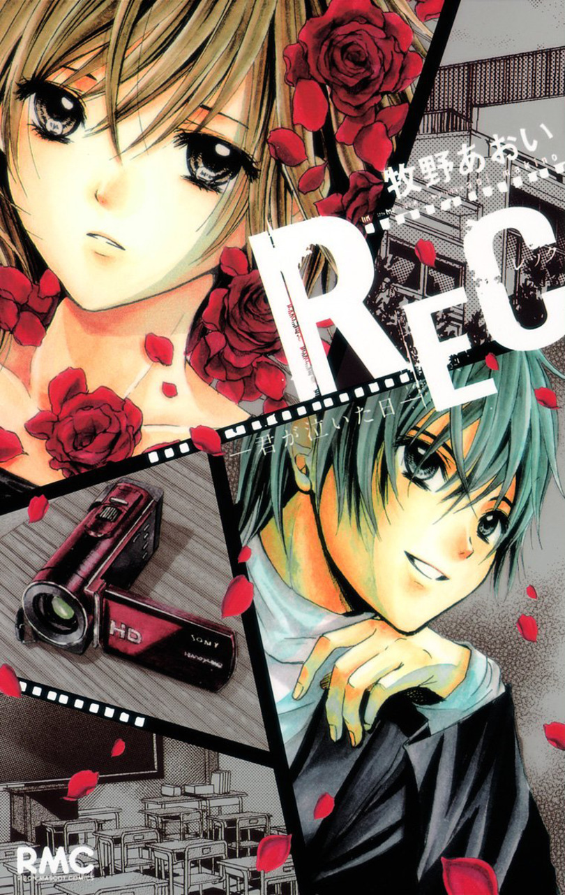

INFORMACIÓN
Titulo:
Rec-Kimi Ga Naita Ni
Autor:
Makino Aoi
Genero:
Romance, Drama, Tragedia, Vida Escolar
Aizawa Minami es una chica que nunca ha llorado en su vida. Ella es incómoda con sus sentimientos, y lleva una videocámara para filmar todo lo que le gusta. Debido a sus peculiaridades, está etiquetada como un fenómeno extraño y alienada por sus compañeros de clase. Satoru es su compañero de clase y un actor adolescente recientemente retirado que la entiende. Se convierten rápidamente en amigos, pero lo que Minami no sabe es que Satoru está ocultando su secreto al mundo ...